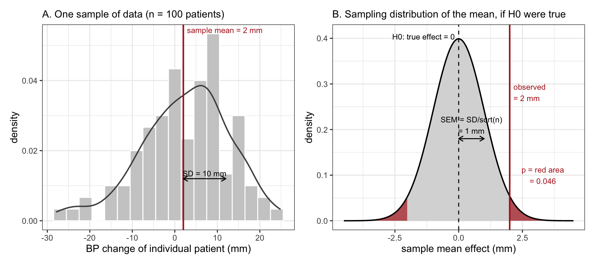
37 Appendix: Null hypothesis testing
You are working in a drug company, which has just conducted a randomized controlled study (RCT) on a prospective blood pressure drug and found that it reduces mean systolic BP by 2 mm Hg, compared to placebo. Because these results come from a finite random sample, although they could point to a real effect, they could also result from sampling error, which simply means that due to pure chance the group of people on the drug and the group on placebo happen to be different in ways that lead to some non-zero difference (effect size) regardless of the causal action of the drug.
There are two possibilities that could explain your result. (i) The drug group has lower BP, because the drug lowered it, (ii) It has lower BP completely randomly (for example if, accidentally, the people in the drug group were with lower BP to begin with, then it makes sense that they ended up with lower BP after taking the drug, even if the drug has no effect on BP).
The next step is to state that in case our results can be readily explained by sampling error, we will not give credence to the hypothesis that it was the drug that caused the observed 2 mm effect. But how do we know, whether our results are consistent with the sampling effect hypothesis? For this we need to model effect sizes (i) under a specific hypothesis of no drug effect at all and (ii) have an idea of how such effect might be distributed.
What comes out of this is a method called Null Hypothesis Testing, which compares your statistic with a whole distribution of model-generated statistics. If your effect, which was calculated in the clinical study, is similar enough to effects which are expected to occur even if the drug does not work, then you can conclude exactly nothing. On the other hand, if your effect is unlikely under the null hypothesis of no drug effect, then you have a choice of either being surprised, because you just saw something unlikely, or alternatively, you can conclude that there must be something other than the random sampling error that caused your 2 mm effect. So which road should you take, the road of surprise or the road of happiness? That depends on what you know of your drug candidate. If there is independent reason to believe that similar drugs might be reasonably effective, then acceptance that you have made a discovery, is a good choice. On the other hand, should you later learn that your compound was actually degraded and could not have the supposed biological effect, then you might as well go with the surprise.
What happens, if your study is not an RCT, but based on observational data? Now, obviously, you do not have randomization and thus randomized data. And yet you will model your statistic under the null hypothesis, as if it came from randomized experiments. This is because you do not know, how to do it any differently! But do not lose hope (at least not yet), because there is a remedy. If you can perfectly match your groups so that the result is practically identical to randomization, then you are good to go. For this you need a full causal framework to decide on which variables to match your sample. If you cannot do this then you can still calculate null hypothesis tests, as many people do – only know that your results are essentially uninterpretable.
37.1 Null hypothesis (H0)
The null hypothesis (H0) is a technical term that usually defines a treatment effect that is completely missing. For example, if the actual Risk Difference (RD) in the population, which is not the same RD that was estimated by the researcher, is exactly zero, and the corresponding Risk Ratio (RR) is exactly one, then we can say “the null hypothesis holds” or “the null is true”. As we can never prove on data that a given null hypothesis holds, we use the H0 as a conceptual aid in testing our data against a rather abstract hypothesis of exactly null effect.
This is the point null hypothesis, so-called because it covers a point value in the continuous scale. However, the sampling distribution generated from this point null generally takes the form of a continuous distribution, like the normal distribution shown above. This creates some ambiguity, when people talk about their sample statistic “under” the null hypothesis.
First, one could argue that the underlying point null is ill-defined, as in real life there are (practically) no true null effects. In biology, at least, meaningful experimental treatments tend to always lead to some non-null effect, however tiny. Seen like this, null hypothesis testing is an abstract mathematical invention looking for an adequate use case – despite being the most widely used statistical method in the 20th century!
On the other hand, it could also be argued that as in testing the null we are actually testing our sample data-derived effect size against the sampling distribution of effect sizes under the null, this allows us to filter out effects that are large enough to come through the statistical significance filter. So we don’t have to worry about “true nulls” being exactly null, as long as the power of our study is just about right to find the scientifically interesting effects and filter out the ones that are too small to matter. However, which effects are large enough to pass the filter is largely determined by the sample size (the right N is estimated by power calculations). It then follows that should you accept this view of the null hypothesis, then you only want to use the method after a successful power analysis. No power calculation – no reason to think that statistical significance filters out the right effects – therefore no reason to do H0 testing.
37.2 P values
The main output of any null hypothesis test is the p value. This is the measure of how similar your data are to the data that might appear randomly if your experimental treatment actually has no effect on the outcome. A large p value is taken to mean good correspondence between your data and the null hypothesis. A good correspondence with the null does not mean that your data suggest no treatment effect. It merely tells you that a possible real effect was not identified by your data. It is possible that had you collected more data, or had your random sample been a little different, you might have well seen the true effect that for now eludes you.
P value is the probability of encountering your sample data or more extreme data, if we suppose that there really is no effect.
P value is in the probability scale (0…1) and it tries to answer the question of how likely it is to see data like yours, assuming that there is actually no true effect. A p value says nothing about the likelihood that the effect, which you see, might be biased (unless you have done a perfect RCT or perfect matching) and it says very little about the actual size of your effect. Most importantly, p value does not give the probability that there is no effect (that the null hypothesis is true), and neither gives it the probability that some scientifically interesting hypothesis is true or false. Thus the direct interpretative use of raw p value is quite limited.1
37.3 Statistical significance
Statistical significance is a concept that uses p values as input and converts small p values into action.
If your p value is less than some arbitrary value, like 0.05, and if you then always claim that your result is “statistically significant”, then in the long run 5% of experiments with zero true effects are classified as “significant”.
The interpretation of “significance” is (i) over the long run, rather than about a specific experiment, and (ii) it depends on the fraction of true null experiments (the ones with zero effect) from all experiments that were done.2
Why use significance level 0.05? Why not 0.01 or even lower? The answer lies in a trade-off, where the lower the probability of obtaining a statistically significant result under true null, the higher the probability of missing out on true effects by labelling them “non-significant”. So the trade-off lies in which kind of error scares you more, fear of missing out vs. fear of false discoveries. As there are no clear instructions on how to solve this, most people prefer to pretend that the historic significance level that worked so well for Ronald Fisher who studied the effects of fertilizer on crop yield in the 1920s, is still good enough for whatever they are studying in the 21st century. For example, which is worse, to label a non-working drug as having a “statistically significant” effect and send it to the next multimillion dollar cycle of clinical studies or burying a working drug forever, because it happened to be “statistically non-significant” in your first low-N study? Obviously, the answer to this one is highly context-dependent.
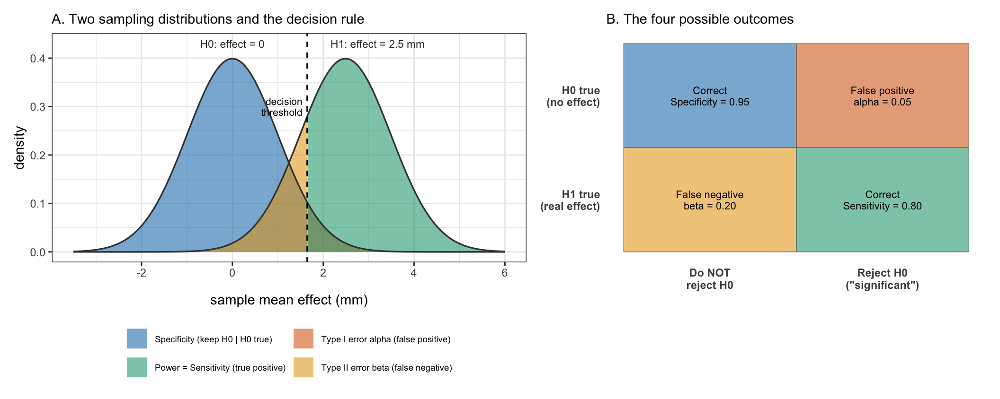
37.4 An example: three RCT-s of BP medicine
You are an executive of a drug company which has conducted RCT-s of three completely independent drug candidates for blood pressure reduction. The average systolic BP for study participants was 160 mm and the trials were drug vs. placebo. All three drugs result in lowering of BP and all give identically statistically significant results.
ES= 2 mm, p=0.045
ES= 10 mm, p=0.045
ES= 20 mm, p=0.045
How do you proceed from here? Which drug(s) should be studied further, which axed, which drug candidate is the most promising of the three? To answer this question we need to use additional information that was not used in the calculation of p value and does not reside in the p value. But first, let’s see how the p value of 0.045 translates into 95% confidence intervals (CI). In the first case, the intervals are really narrow around the estimated effect size of 2 mm. In the second case the CI-s are rather wide and in the third case they are wider still. But what does it mean? To extract meaning from CI-s, we must decide a couple of things.
What is a clinically meaningful effects size? In other words, which effect would be too small to matter in clinical and/or drug development pipeline context? Because there are already many BP drugs on the market, one assumes that the minimal clinically useful value must be a bit lower than a minimally useful value for a drug company. But anyway, let’s define it arbitrarily as 5 mm. This means that our first drug with its 2 mm effect is as good as useless, and the CI-s indicate that we can state this with high confidence. I.e, we have plenty of evidence on which to base our decision to abandon drug no 1.
What is the likely/possible range of drug effects, based on previous experience with similar drugs. Here the published literature is informative: a meta-analysis of 354 placebo-controlled trials put the standard-dose systolic reduction at about 9 mm Hg, rising slightly with baseline pressure to roughly 9.7 mm Hg for a cohort starting at 160 mm.3 We can encode this prior expectation as a normal distribution with a mean of about 10 and a standard deviation of 2.5 (so that effects much above 15 mm are treated as unlikely), or, if we do not want to discount effects over 15 mm too heavily, as a Student’s t distribution with somewhat fat tails (say, nu=3). According to this criterion, the second drug is right where we thought it most likely to see its effect prior to our study. But its CI go deep into clinically uninteresting territory, and on the other side, deep into experimentally unlikely territory. Thus we could conclude that drug 2 is a reasonable candidate for further study, but having said that, we have relatively light evidence of its effect being in the window we aimed for.
How about the third drug? Its most likely estimated effect is way too big under our prior hypothesis of expected effect sizes. This raises suspicion about the design and conduct of the study which resulted in this effect. So any irregularities there should be sussed out. But then, it is also true that the CI-s here are extremely wide, going into territory where the reduction in BP could seriously harm patients. If uncertainty is that wide, given a half-reasonable sample size, this could well mean that actual patients were put to danger during this trial. One more reason to proceed with extreme caution!
In conclusion, the first p=0.045 meant a very tight effect size estimate close to zero; the second p=0.045 meant a potentially interesting drug candidate that needs further study; and the third p=0.045 sent a clear message: Keep away! Danger! These separate meanings do not reside in the p values themselves, which are identical, but in the effect sizes combined with sample sizes, prior expectations and clinical/business windows. Note that any interpretation of an effect size presupposes prior knowledge of the possible, and impossible, effects.
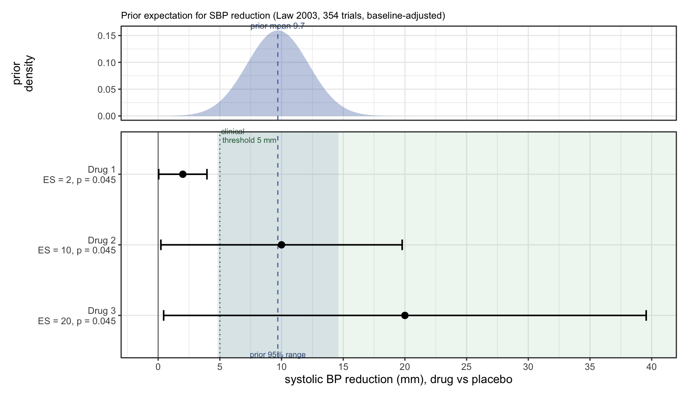
37.5 Absence of evidence: testing for equivalence
A large p value is not evidence that the effect is zero – it is only a failure to rule zero out, and that failure can equally well mean the study was simply too small to see a real effect. So how could you ever provide positive evidence that a drug does not have a clinically meaningful effect: that two formulations are interchangeable, say, or that a cheaper generic is no worse than the original? Ordinary null hypothesis testing cannot do this, because you can never “accept H0”.
The frequentist tool for the job is equivalence testing, most often the two one-sided tests (TOST) procedure.4 You begin by declaring an equivalence margin – the smallest effect that would still matter – which is exactly the clinical threshold (the MCID) we drew on the millimetre scale for the three drugs. Then, instead of testing against zero, you run two one-sided tests against the edges of that margin, and ask whether the effect is significantly above the lower bound AND significantly below the upper bound. If both tests pass, you have positively demonstrated that the effect, whatever its sign, is too small to care about. Equivalence and non-inferiority designs of just this kind are what regulators require before approving a generic drug.
Notice that this is the same machinery as before – one-sided tail probabilities against a null – with the null simply moved off zero to the margin you actually care about. In the estimation framework the rest of this book prefers, you get the same conclusion more directly: compute the interval and check whether it lies entirely inside the equivalence margin. If the whole compatibility interval sits between, say, -5 and +5 mm, the data are telling you the effect is trivially small; if it pokes out past the margin, they are not. TOST is just this interval reading dressed up as two tests.
37.6 P values have problems
Suppose you draw a line by any method (incl. statistical significance) and treat any and all effects that cross it as discoveries, and ignore the effects which failed to cross into “significance”. It makes no difference where you put the line or which method you use to calculate statistical significance – what happens is that while the effect may be on a continuous scale (BP difference in mm, risk difference in percentage points, or whatever), your result will be either “a discovery” or “a non-discovery”. There are a few problems associated with this.
37.6.1 The problem of the love of God.
The thing is that two extremely similar effects may happen to land on the opposite sides of the decision line. And yet, in God’s eyes, it is clear that they deserve equal love. Then why not in yours?5
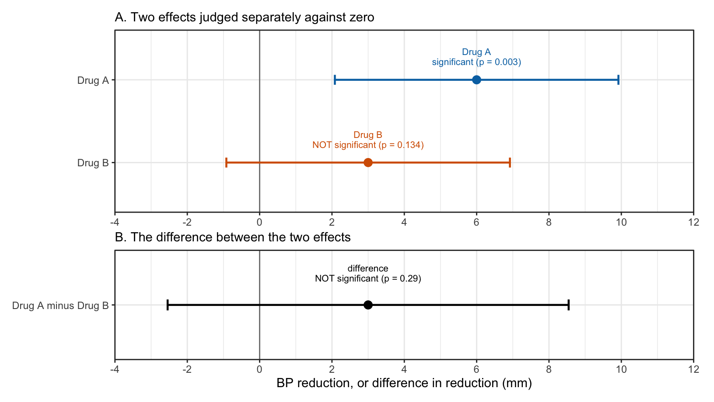
37.6.2 The problem of interpretation of a series of tests.
Let’s suppose you measure a bunch of different RNAs under some experimental condition and get an effect estimate for each one of them. Now, some of them will be over the line and some will be under it and some of the ones under the line are actually relevant effects, whose size may actually be quite similar to those over the line. Naturally, people focus in their interpretation in those effects that they label as “discoveries”, and ignore the rest. And that means that they blithely ignore co-occurrence patterns, for example between genes in the same regulon, that are actually present in their data and can actually be seen in their analysis! Such missed opportunities are solely caused by a bad choice of the analytic method.
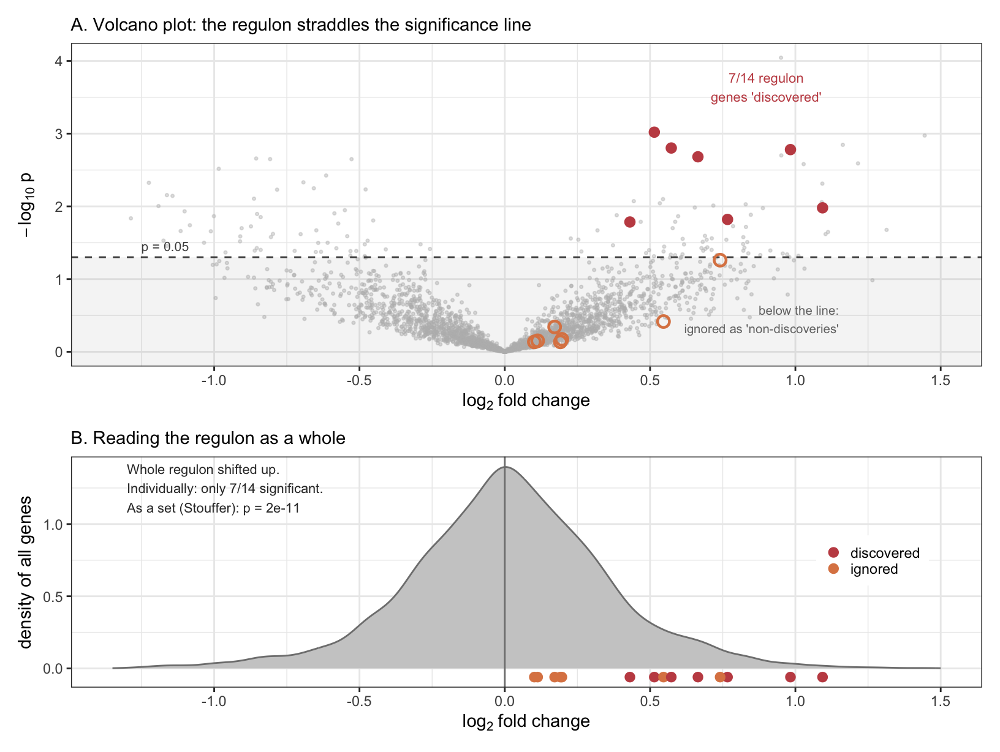
37.6.3 The problem of overblown effects.
This is the most troubling of the three, because it leads to the negation of the very principle that gave birth to null hypothesis testing. The idea behind H0 testing is that when a researcher sees an effect, she naturally wants to believe in the reality of this effect and may ignore the more likely explanation of sampling error. Thus, running a test and looking at a non-significant p value will cool her head, curb her enthusiasm, and lead to a more honest science in the long run. And this is exactly what should happen, as long as the power of the test to find true effects is high. The power of 0.9, for instance, simply means that out of every 100 true effects (a.k.a. false H0-s), 90 effects on average will come out as “statistically significant”. When the power is >0.9 (>90%), then the magnitude of those sample-based discoveries will on average be very nearly the same as that of the underlying true population effects (a small upward bias remains even at high power, as the simulation below shows). Unfortunately, the true power of the experiment is quite hard to ascertain and a typical power of a biological experiment (especially in animals) tends to be very much lower than 0.9, often residing in the 0.1-0.3 region.6 This leads to overestimated effect sizes of the statistically significant discoveries, because many true effects with correct effect sizes in the sample data will fail to achieve significance; and with a truly low power the ONLY realistic way to achieve statistical significance is to present an overblown effect size and/or deceivingly low variation (the simulation below).
As making discoveries by statistical significance is a long-term commitment, we must admit as a logical fact that the published effect sizes of animal and human studies at least tend to be seriously over-estimated, solely due to the analytic method that was supposed to curb our enthusiasm about the very same effects. The only realistic solution to this that does not entail using more sensible methods is to dramatically increase the sample sizes of what are already some of the most expensive experiments in biomedicine.
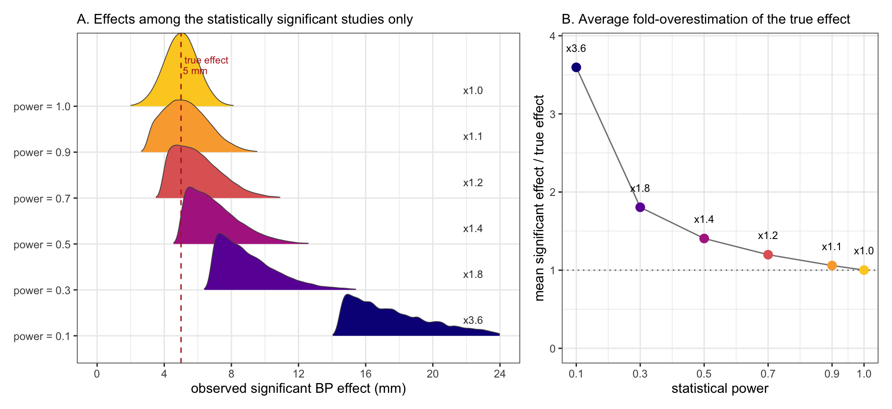
37.6.4 The problem of significance chasing.
Suppose a court of law is hearing the evidence and the judge decides to send the case back to gather more of the stuff, because the weight of evidence presented is insufficient to convict. After gathering more evidence, a verdict is reached. If we assume that exculpatory evidence is not buried and all evidence is weighted impartially, then most people would agree, that everything is fine in this simple story. How about when we gather N observations and calculate a p value that lies on the wrong side of significance? It should then be equally all right to collect more data (N+1, N+2, and so on) and recalculate the p value, until significance is reached. Or is it? As it happens, if you do this long enough, then you are virtually certain to get a significant p value sooner or later, even if you are testing a true null. This sad fact means that generations of scientists have been taught that collecting more evidence is a sin. Moreover, those that commit it and chase significance until they find it, will not only have committed a fraud-like infraction, but can also publish their finding as a real thing and get away with it, as it is very hard to prove that someone has calculated many p values and deleted all but one. The apparent paradox around collecting evidence dissolves as soon as we understand that a p value is not a measure of evidence. It measures the concordance of sample data and simulated data under true null, nothing more.
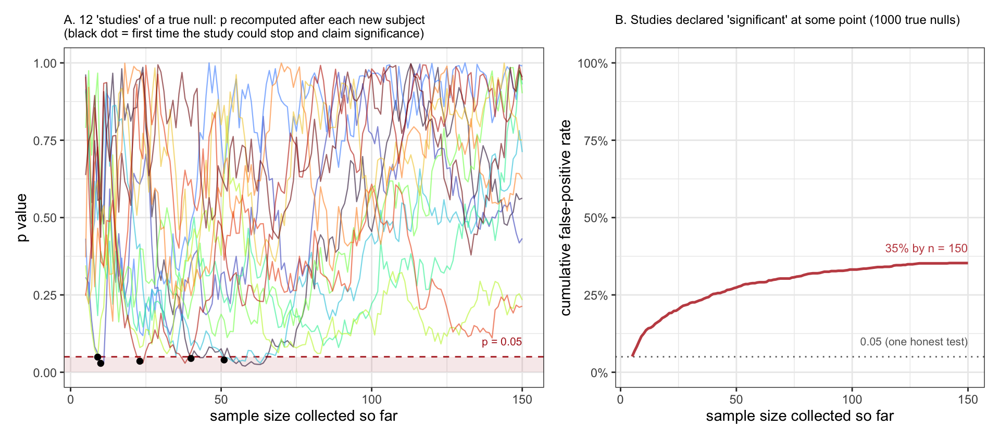
None of this makes collecting more data a sin in itself – it makes unplanned, peek-until-significant collection a sin. The legitimate way to watch your data accumulate is to plan for it in advance. Group-sequential designs spread the error budget across a set of pre-specified interim analyses (the O’Brien-Fleming and Pocock boundaries are the classic recipes), and alpha-spending functions generalise this to flexible monitoring; either way the overall type I error stays at the nominal level no matter how many planned looks you take, and stopping early for success or futility becomes good practice rather than cheating. It is standard in well-run clinical trials. In the estimation framework the tension largely dissolves: a posterior is simply updated as data arrive, and – provided the decision of when to stop does not itself depend on unmodelled features of the data – the posterior at any moment remains a valid summary of the evidence so far. The sin was never looking at the data; it was looking without accounting for the looking.
37.7 The problem of multiple testing
If you do over some time or experimental system or field of study k independent tests of k independent samples, and call all tests, whose p<0.05 “significant”, then \(p_{corrected} = p \cdot k\). This is the Bonferroni correction, which fixes the family-wise type I error rate at the level \(\alpha\) (here 0.05). Presenting any results whose \(p \cdot k < 0.05\) (equivalently \(p < 0.05/k\)) as “significant” has the same meaning as presenting a p value from a single test, whose p < 0.05 as “significant”. Thus we fix the family-wise type I error rate at the level \(\alpha\). Alas, this correction leads to a loss of sensitivity (it increases the frequency of type II errors). To mitigate this problem, a host of compromise procedures, like sequential Bonferroni, has been developed. These corrections result in a higher corrected p value, which no longer fixes the type I error level at 0.05, but lead to a smaller drop in sensitivity. Arguably the most serious aspect of the multiple testing problem is that there is no consensus about what constitutes a family of tests. It could be multiple tests done within a single experiment (like measuring the level of 20 000 mRNAs from a sample of 3 biological samples), or all experiment done by you over your lifetime, or all experiments done by various groups within the confines of a single well-defined experimental system, or whatever. Perhaps the best recommendation that can be given is to record and publish all calculated p values. But even this is far from enough, as it has been successfully argued that not only the tests that were done, but also those that would have been done, had data been different, count in the family k.
Multiple testing problem presents a strong reason for abandoning the very concept of “statistical significance” as unworkable in scientific practice. The alternative approach entails Bayesian estimation of sample means and effect sizes, accompanied by measures of estimation uncertainty, which are often presented in the form of 95% credible intervals. Within this approach false alarms are dealt by the prior structures and by using multi-level modeling.7
37.7.1 Multiple testing without multiple tests: welcome to the Garden of Forking Paths
To conclude, we introduce the garden of forking paths, which is a simile to illustrate that a multiple comparisons problem can persist, even where people perform only a single analysis on a single comparison.8 There can be a large number of potential comparisons when the analyst chooses analytic methods based on the data he sees. This means that had the data been different, he would have used a different approach to its analysis, and as the data was what it was, there is really no way of knowing, how many different analyses were possible to the researches (obviously, this also depends on the size of his analytic repertoire). This presents a kind of multiple testing problem without multiple testing.
37.7.2 From the garden of forking paths to multiverse analysis
However, there is another view to the path-ridden garden that tries to turn it from a problem to an asset. This is the multiverse approach to p values, where the researcher calculates a large number of p values for a single comparison, using a host of small variations in tests and in analytical choices (like data transformations) and then publishes the distribution of all the p values. From this distribution, he then tries to asses if his scientific conclusion stands on firmer ground than would be possible to determine from a single test.
Does this approach lead to reduced sensitivity of analysis? Does it actually work?
In Steegen, Tuerlinckx, Gelman & Vanpaemel (2016), the multiverse is proposed as a transparency device, not a method to estimate the strength of evidence for an effect. It produces no single summary value and implies no threshold for an effect to be declared robustly significant (Perspectives on Psychological Science, 10.1177/1745691616658637). So strictly speaking, the descriptive multiverse has no “sensitivity” — it isn’t a test. Sensitivity only becomes a meaningful question once you impose a decision rule on the distribution, and whether or not it reduces sensitivity depends entirely on the rule. Taking sensitivity as power to detect a true effect, there are three regimes:
1. The consensus / vote-counting rule (“if most agree…”). This rule is the worst of the three. Demanding that most or all specifications clear p < 0.05 is an intersection rule: you are held hostage by your least powerful, most adversarial specification. Worse, it is statistically the discredited vote-counting aggregation — counting significant results rather than pooling evidence. Vote counting is not just conservative; its power can decrease as you add specifications for a moderate true effect, because each added underpowered or noisy specification dilutes the apparent consensus. So the more thoroughly you populate the multiverse, the less robust a genuine effect can look.
2. A proper joint inference test. Simonsohn, Simmons & Nelson (2020, Nature Human Behaviour, 10.1038/s41562-020-0912-z) provides a specification-curve test that constructs a null distribution by resampling under the enforced null and asks whether the whole curve is more extreme than chance. Because it borrows strength across specifications rather than requiring each to clear a bar, it can retain reasonable power.
3. The descriptive multiverse (Steegen’s original). No rule, no power, by design.
There is hidden in the garden the hidden dependence problem. The specifications are not independent draws. They share the same data and overlap heavily in construction, so the “distribution of p-values” is not a sampling distribution in any replication sense. Tight clustering means the conclusion is insensitive to analytical choices — not that it would replicate. This is why the joint test uses bootstrap-under-the-null rather than treating the specs as independent tests, and it’s why naive eyeballing (“90% are significant”) is misleading: 90% of a thousand near-collinear specifications can be one lucky draw. How well does it work in practice? It turns out to be demonstrably good at exposing fragility, but is much weaker as a confirmatory tool. Patel, Burford & Ioannidis (2015) computed 8192 Cox models for each of 417 NHANES exposures and found a “Janus effect” — the association reversed direction between the 1st and 99th percentile of specifications — for 31% of variables (10.1016/j.jclinepi.2015.05.029). Chu et al. (2020) applied the same logic to 97 alcohol–breast-cancer studies and found a median ratio-of-odds-ratios of 3.0 across model specifications, with some exceeding 100 (10.1093/ije/dyz271); Guloksuz et al. (2018) showed the same instability for the psychiatric exposome (10.1093/schbul/sby118). In each case the multiverse worked: it cleanly distinguished a brittle claim from a stable one. Applied neuroimaging multiverses behave the same way — Bloom et al. (2022) found amygdala reactivity estimates robust to analytic choices while amygdala–mPFC connectivity was not, with one preprocessing step (deconvolution) driving the whole connectivity result (10.1002/hbm.25847).
The limitation is that the multiverse is only as good as the universe you define, and that choice is itself an unconstrained researcher degree of freedom. Del Giudice & Gangestad (2021, “A Traveler’s Guide to the Multiverse,” AMPPS, 10.1177/2515245920954925) make the decisive point — specifications are not exchangeable. Some are simply worse (dichotomizing a continuous variable, dropping a necessary confounder, a mis-transformed outcome), and averaging over them mixes principled and unprincipled analyses as if they carried equal weight. A real effect can be buried under defensible-looking-but-inferior specifications, and conversely a motivated author can pack the universe with specifications that flatter the desired conclusion. The degrees of freedom don’t vanish; they move from “which analysis do I report” to “which analyses do I admit into the multiverse.”
The cleanest practical success stories are therefore the deflationary ones — Orben & Przybylski’s (2019) digital-technology-and-well-being specification curve over tens of thousands of analyses, which showed the association is real but trivially small, is the canonical case.9 It is much harder to point to instances where a multiverse established a contested effect, partly because of the dependence and specification-selection issues above.
37.8 Controlling the false discovery rate
The previous section ended by recommending we abandon “significance” for Bayesian estimation. Before leaving the frequentist framework behind, though, it is worth seeing the most successful repair it offers to the multiple-testing problem – one that is now the default in genomics and many other large-screen settings.
Bonferroni and the other family-wise procedures of the previous section all try to make the probability of even a single false positive small. When you run a handful of tests that is sensible. But when you test 20 000 genes at once, demanding near-certainty that not one of your discoveries is a false alarm is far too strict: you will protect yourself from false positives so zealously that you throw away almost every real effect along with them. The false discovery rate (FDR) takes a different and more forgiving stance. Instead of policing the chance of any error at all, it controls the proportion of your discoveries that are false. You accept in advance that, say, 1 in 10 of the genes you flag will be a mistake, in exchange for flagging many more of the real ones.10
To state the definitions cleanly, imagine we run \(m\) tests, of which an unknown \(m_0\) are true nulls (no real effect). We declare some number \(R\) of them “significant” – these are our discoveries. Of those discoveries, \(V\) are in fact true nulls (false discoveries) and the remaining \(S = R - V\) are real. We never observe \(V\) and \(R\) separately in real data, but we can reason about their expected behaviour.
The false discovery rate of Benjamini and Hochberg (1995) is the expected fraction of false discoveries among all discoveries,
\[\text{FDR} = \mathbb{E}\!\left[\frac{V}{R}\,\mathbf{1}\{R>0\}\right],\]
where the indicator \(\mathbf{1}\{R>0\}\) encodes the convention that the false-discovery proportion \(V/R\) is defined to be \(0\) when we make no discoveries at all (\(R = 0\)). The Benjamini–Hochberg procedure – order the p values \(p_{(1)} \le p_{(2)} \le \dots \le p_{(m)}\), find the largest \(k\) with \(p_{(k)} \le \tfrac{k}{m}\alpha\), and reject everything up to it – guarantees that this FDR stays at or below the chosen level \(\alpha\).
That convention “\(V/R := 0\) when \(R = 0\)” is a little awkward: it folds together two quite different situations (making no discoveries, and making only correct ones) and it drags the whole quantity down by the probability of getting no discoveries. Storey’s positive false discovery rate (pFDR) removes the awkwardness by conditioning on having made at least one discovery rather than assigning a value of zero:
\[\text{pFDR} = \mathbb{E}\!\left[\frac{V}{R}\,\middle|\,R>0\right].\]
In words: given that you have made some discoveries, what fraction of them are false? – which is arguably the question a working scientist actually asks. The two quantities are linked by \(\text{FDR} = \text{pFDR}\cdot\Pr(R>0)\), so pFDR is always at least as large as FDR; but when \(m\) is large at least one rejection is virtually guaranteed, \(\Pr(R>0)\approx 1\), and the two essentially coincide.
The q value is to the FDR what the p value is to the type I error rate: a per-feature significance score. The q value of a particular feature is the smallest pFDR at which that feature is still called significant,
\[q(p_i) = \min_{t\,\ge\, p_i}\ \text{pFDR}(t).\]
Operationally, if you slide your significance cut-off down to a feature’s own p value, that feature’s q value is the expected proportion of false discoveries among everything you have called significant at that cut-off. The contrast with the p value is the whole point: a p value of \(0.01\) says “a result this extreme would arise 1% of the time for this one test if its null were true”; a q value of \(0.01\) says “1% of all the features I am calling significant at this threshold are expected to be false discoveries”. The q value is therefore the natural currency for large screens, because it is interpreted relative to your list of discoveries rather than relative to one isolated test.
One practical lever separates the two traditions. The Benjamini–Hochberg procedure implicitly assumes that every null might be true, i.e. that the proportion of true nulls is \(\pi_0 = 1\); this makes it safe but conservative. Storey’s q values instead estimate \(\pi_0\) – read off as the flat right-hand level of the p value histogram, where only nulls contribute – and scale the FDR by it. Because \(\pi_0 < 1\) whenever real effects are present, Storey’s thresholds are less conservative and yield more discoveries at the same FDR.
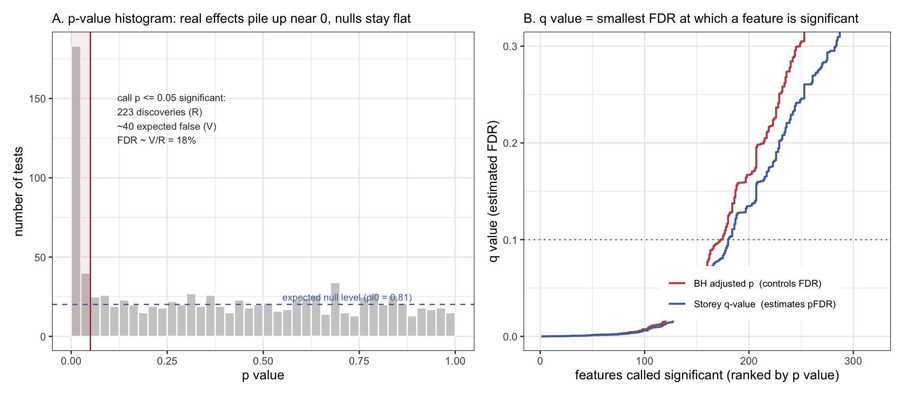
A few more things about FDR to keep in mind. First, it is a property of the whole family of tests, so the unresolved question – what counts as the family? – is still with us. Second, the standard procedures assume the tests are independent or only mildly dependent; strong correlation between features (common in genomics) needs more careful variants. Third, and most importantly, controlling the FDR still tells you nothing about whether any particular hypothesis is true; it bounds an average over your list of discoveries, not the status of the gene you happen to care about.
37.9 Connecting the p value to the rest of statistics
The p value is wired into the rest of statistics at three points. It carries the same information as a confidence interval, read off at a single spot. It contains the same machinery as regression and the generalized linear model. And, under one very specific assumption, it is a probability statement straight out of Bayes’ theorem. Seeing these wires does two useful things. It demystifies the p value – once you know what it is connected to, its odd behaviour stops being mysterious. And it shows why the estimation-based, Bayesian approach that the rest of this book is built on does not so much reject the p value as contain it: almost every legitimate thing a p value tells you can be recovered from a posterior, usually carrying the interpretation you wanted in the first place.
37.9.1 Connecting the p value to confidence intervals
If your p value is 0.05, a frequentist 95% CI just touches zero. If the p value is 0.1, a 90% CI touches zero; if it is 0.25, a 75% CI touches zero. This is not a coincidence but an identity: the confidence interval and the p value are the same calculation run in two directions.
The p value fixes the null at zero and asks how compatible the data are with it. The confidence interval turns the question around: it slides the null across every possible value and keeps all the null values that the data would not reject. Formally, the X% confidence interval is exactly the set of hypothesised values \(\theta_0\) for which a test of \(H_0:\text{effect}=\theta_0\) gives \(p > 1-X\). Zero is inside the 95% CI precisely when the test of \(H_0:\text{effect}=0\) is non-significant at 0.05 – which is just another way of saying \(p>0.05\). (Note that this is the reverse of a common misstatement: the interval is built by moving the null across the axis, not by centring a null on the sample mean.)
So the two carry the same information at the one point they share, the null of zero. But the interval carries that information at every value at once, and that is strictly more useful. The p value collapses the whole picture to a single tail probability at zero; the interval shows the entire range of effect sizes the data are compatible with. This is exactly why the three-drug figure above could tell three different stories from one identical p value: the p was silent about size and precision, but the intervals were not. It also pays to drop the word confidence, which invites the misreading that the interval has a 95% chance of containing the true effect (it does not – see the discussion in the uncertainty chapter). A cleaner reading is a compatibility interval: the range of effect sizes reasonably compatible with the data, given the model.11 The curve in the figure below makes this literal – it is a p-value function that reports, for every candidate effect, how compatible it is with the data; cutting it at any height gives the corresponding interval.
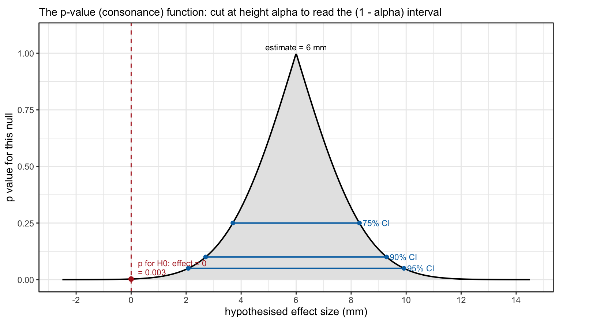
37.9.2 Connecting the p value to the t-test, regression and the GLM
Students often learn the t-test, ANOVA, correlation and regression as separate techniques, each with its own p value. They are one technique. A two-group comparison is identical to a linear regression with a single 0/1 predictor coding the group:
\[\text{effect}_i = \beta_0 + \beta_1\,\text{group}_i + \varepsilon_i .\]
Here \(\beta_1\) is the difference in group means, its standard error is the t-test’s standard error, and the p value printed next to it is the t-test’s p value, to the last decimal. One-way ANOVA is the same model with a categorical predictor with 2+ levels; Pearson correlation is the same model on standardised variables; the generalized linear model extends it to non-normal outcomes. “The p value of a t-test” and “the p value of a regression coefficient” are not an analogy – they are the same number.
What does the Bayesian version look like? Take the same model, but instead of one best-fitting line and a tail probability, put a prior on the coefficients and report the whole posterior of \(\beta_1\). With a flat prior and the normal likelihood, the posterior of the effect is essentially a t-distribution centred on the estimate with the same standard error – so the frequentist interval and the Bayesian posterior land on top of each other (Panel A below). The arithmetic is shared; only the interpretation differs, and the Bayesian one is the one you wanted: a distribution of credible effect sizes, from which \(P(\text{effect}>0)\), or \(P(\text{effect}>5\text{ mm})\), can be read off directly.
The payoff of doing it the Bayesian way is that you are no longer locked into the normal error model. Kruschke’s “Bayesian estimation supersedes the t test” (BEST) swaps the normal likelihood for a Student-t likelihood and estimates the mean and the spread (\(\mu\) and \(\sigma\)) jointly, letting the data’s own scatter – including its fat tails – decide how much an extreme point should count.12 The effect is dramatic. In Panel B we add a single aberrant patient to the same trial. The ordinary t-test (= the Gaussian regression) is dragged from a near-significant p = 0.07 to a thoroughly null p = 0.31, its estimate almost halved by one data point. The robust Student-t model shrugs: its posterior stays put at about 5.9 mm, almost exactly where it sat before the outlier arrived. The robust likelihood is not a trick; it is an honest statement that real measurements occasionally misbehave, and a model that expects this is not held hostage by one of them.
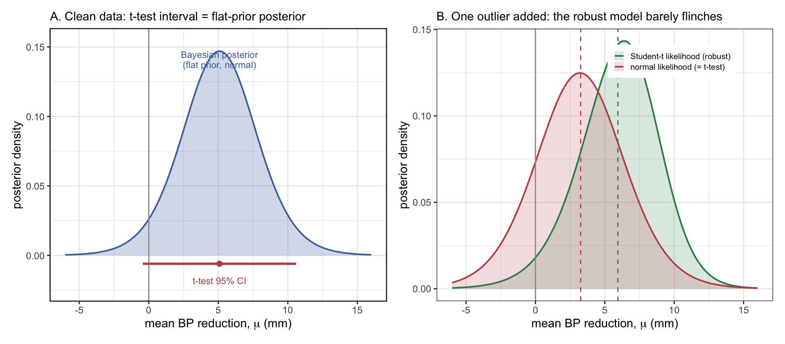
37.9.3 Connecting the p value to Bayesian statistics
Earlier in this chapter we insisted that a p value is not the probability that there is no effect, nor the probability that any hypothesis is true. That is correct. But there is one specific construction under which a p value does turn into an honest probability about the parameter – and seeing exactly what that construction requires is the most illuminating connection of all.
Take a one-sided p value: you observed a positive effect and you ask how often the null would produce something this positive or more. Now put a flat prior on the effect (every value equally likely beforehand) and run Bayes’ theorem with the usual normal likelihood. The posterior is a normal distribution centered on your estimate. And the posterior probability that the true effect is actually negative – that you have the sign wrong – comes out exactly equal to the one-sided p value. In the figure below, the same 2 mm estimate with SEM 1 mm from the opening figure of this chapter has a one-sided p of 0.023; under a flat prior, the posterior probability that the drug truly raises blood pressure is also 0.023.
That number is Gelman and Carlin’s Type S (sign) error probability: the probability that a result points the wrong way.13 It is the natural partner of the Type M (magnitude) error we met in the winner’s-curse figure – Type M asks how exaggerated a significant effect is, Type S asks how often it points the wrong way – and together they are the estimation-minded replacement for the old type I / type II bookkeeping.
The crucial word in all this is flat. The clean identity “one-sided p value = posterior probability of the wrong sign” holds only when the prior is flat. A flat prior says you genuinely knew nothing beforehand – not the magnitude, not even the sign. That is almost never true; recall the three-drug example, where a literature of 354 trials told us a great deal about plausible effects. With any realistic prior the two numbers part ways, the posterior usually being more sceptical than the p value. So the reinterpretation does not rescue the p value – it exposes the hidden assumption underneath it. A p value behaves like a Bayesian sign-error probability computed by someone who swore they knew nothing, which is precisely the assumption the rest of this book tries to avoid.
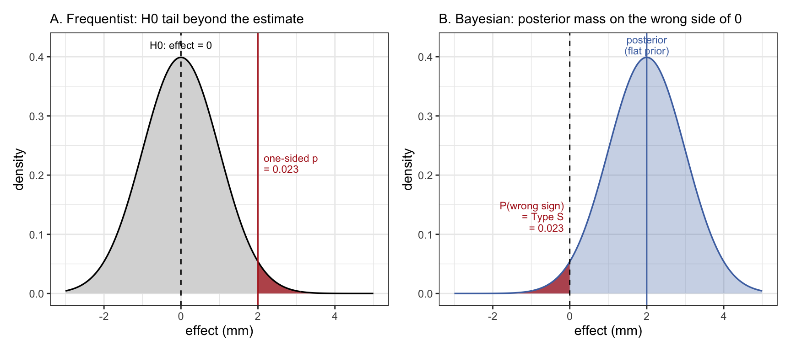
37.9.4 Connecting the p value to the weight of evidence
A small p value feels like strong evidence against the null. How much evidence is it really? To answer that we have to compare the null against an alternative – which a p value, computed from the null alone, never does. When the comparison is forced, the verdict is sobering: p values systematically overstate the evidence against the null.
The cleanest way to see this is a calibration that holds across a wide class of reasonable alternatives.14 Translate a p value into the most favourable Bayes factor it could possibly justify – the strongest the evidence against the null could be for any sensible alternative. A Bayes factor never weighs the null on its own; it weighs it against a specific alternative, and its value depends on which alternative you name. The most favourable one is the alternative the most consistent with the data – in effect, the hypothesis, chosen with hindsight, that the true effect is exactly the size you happened to estimate (an alternative whose prior is piled up right where the data landed). No alternative you could have named in advance fits the data better than this best-case-after-the-fact one, so the Bayes factor it yields is an upper bound: it is the strongest the evidence against the null could possibly be, and the evidence for any pre-specified alternative is weaker still. A p of 0.05 results in a maximal Bayes factor of about 2.5 to 1 in favour of an effect, and – if the null and the alternative started out equally likely – leaves the null with at least a 29% posterior probability of being true. Not “5% chance the null is true”, as the number is so often misread, but at best 29%. You have to push to p = 0.005 before the null’s posterior probability drops below 7%.
A second, lighter device makes the same point about a single p value. This is the surprisal, or S-value: \(s = -\log_2(p)\). S value measures the number of consecutive “heads” in fair coin tosses that would be exactly as surprising as the p value. A p of 0.05 gives s = 4.3 bits – about as surprising as four or five heads in a row, which nobody would call extraordinary evidence of a loaded coin. A p of 0.005 is 7.6 bits, a p of 0.001 about 10 bits. Recasting the p value as coin tosses cures the temptation to read “p = 0.05” as near-certainty: it is a mild surprise, no more.
Both devices say what the rest of this section has been saying from different angles. The p value is a tail area – not a measure of evidence and not a probability about a hypothesis. The moment you ask the questions scientists actually care about – how big is the effect, how sure am I of its sign, how strong is the evidence, how probable is the hypothesis – you have left the p value behind and re-entered the world of estimation, intervals, priors and posteriors that the rest of this book is about.
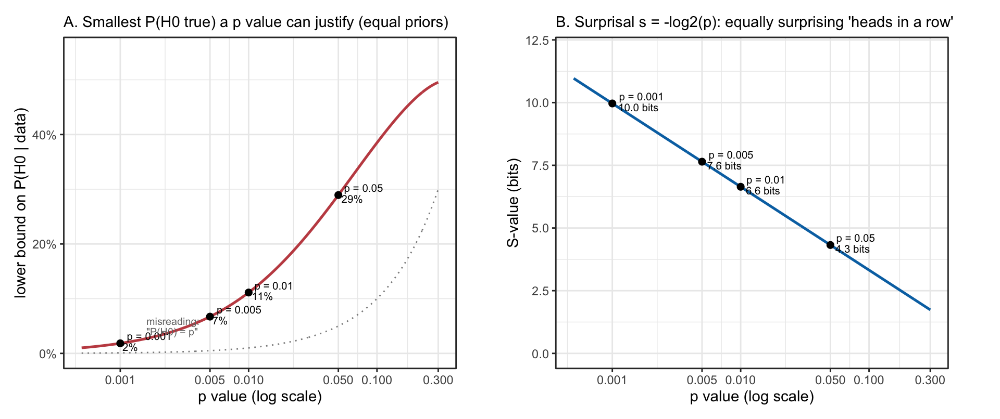
38 Conclusion
None of this means the p value is worthless. Computed honestly, reported in full – every test, not only the winners – and read as exactly what it is (a statement about the compatibility between one dataset and one null, on the assumptions of the model), it is a legitimate, if narrow, summary. The trouble was never the arithmetic. It is that the questions we care about in science – how large, how certain, how credible – are questions about parameters and hypotheses, while the p value answers a question about data. The remedy is not a better threshold or a cleverer correction; it is to model the effect you care about and report its posterior.15
Draft note. The section below is carried over from the old probability chapter (§3.2.1.1), as planned in BOOK_PLAN.md. It overlaps with the sections above (p values, significance, type I errors) and is to be merged with them in this appendix’s rework.
38.1 Counting the events in a series of experiments leads to frequentist statistics
Counting over imagined repetitions of an experiment can be developed into a complete system of inference — null hypothesis testing, in which datasets, rather than hypotheses, carry the frequencies. The ambition behind it is old: Jacob Bernoulli’s Ars Conjectandi (1713) already aimed to read the unknown composition of an urn from the frequencies observed in a sample, using the sampling probabilities alone. Clayton has argued that this is a fallacy — the probability of the data under a hypothesis cannot, by itself, deliver the probability of the hypothesis — and traces its descent from Bernoulli through Quetelet, Galton, Pearson and Fisher into null hypothesis testing.16 The rest of this appendix sets out that development and its problems; Chapter 9 returns to the contrast with the Bayesian approach.
Interestingly, the people who think they cannot ask the question about probability of a hypothesis, nevertheless try to answer it. For this they use something called null hypothesis testing. This is a statistical paradigm created by R.A. Fisher, Jerzy Neyman and Egon Pearson in 1920-1930-ies. The crux of frequentist statistics is that while hypotheses have no frequency, datasets do (albeit, only under certain precisely defined conditions). Imagine an infinite population of measurement values, from which you randomly and independently draw a sample of N values, then calculate a statistic, for example the mean. This sample mean reflects the population mean, but because of sampling error it does not do so precisely.
The sampling error tends to be smaller, when N is larger – and it gets smaller proportionally to the square root of N. As N grows, it gets progressively harder to push the sampling error downwards.
Now, imagine that we draw k such samples (each with size N) and calculate k means. The central limit theorem of statistics tells us that no matter what the sample data distribution, those means are approximately normally distributed. Note that for the central limit theorem to work, N must be at least 30, dependent on the data distribution. The overall mean of the k means is then the most likely estimate for the population mean, which in turn is the value most likely to be encountered in the population. We illustrate this by first simulating 1000 random samples, each with N=3, from standard log-normal distribution, and then calculating 1000 means. Not surprisingly, plotting the raw data leads to a nice lognormal distribution (dashed black curve), and plotting of the means (continuous black curve) leads to a fairly similar curve. However, when the 1000 samples get bigger (N=20, red curve; N=60, blue curve), the distribution of their means gets closer to normal.
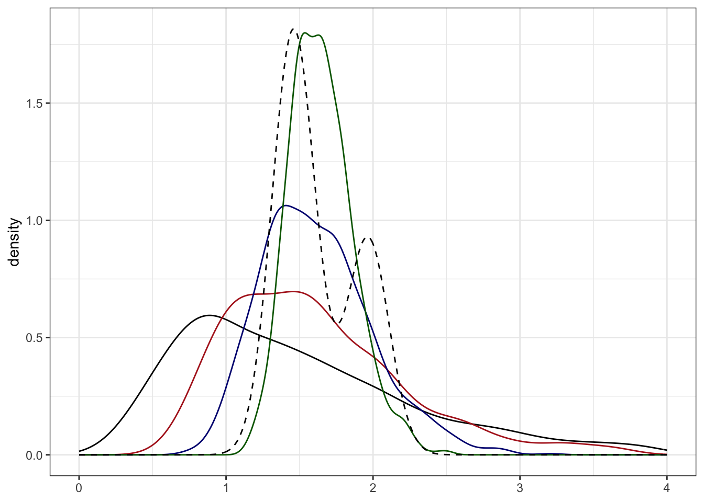
Moreover, from the normal distribution it is easy to find the region that contains \(X\%\) of the area under the curve, or \(X\%\) of the probability density. The parameter values that delineate this area define \(X\%\) confidence interval (CI).
The interpretation of \(X\%~ CI\) is that if we draw many samples and calculate as many means, then the true population mean falls inside \(X\%\) of them. 17 Formally, the CI makes a frequency statement about the error properties of the algorithm that calculates the CI, rather than about your sample mean. Nevertheless, if we have no background information to take into account and if the aforementioned assumptions (especially those of normality, and random and independent sampling) hold, then a confidence interval is numerically equivalent to Bayesian credible interval (also abbreviated as CI), whose interpretation is simply that \(X\% ~CI\) means that the true expected value lies within this interval with X/100 probability. So you could view your confidence interval as a quick and dirty approximation to the credible interval, which you really want to have; but only if some strong assumptions hold.
The confidence interval is not the only, or even the most popular, tool of frequentist statistics. This distinction belongs to the p value.
The logic of p value goes like this.
As hypotheses do not have probabilities, but datasets do, we can speak of probability of data under some hypothesis – \(P(d \vert h)\) or “probability of data given the hypothesis is true” – in the hope that this says something about the probability of that hypothesis, or \(P(h \vert d)\).
For a two-group comparison (experimental values versus control values, say) the easiest way to do that is to define a null hypothesis, or \(H_0\), whereby the means of the two groups are identical 18.Now, if there really is no effect, then by virtue of the sampling error we expect to see an effect anyway (this is called sampling effect or sampling error). And any true effect will be on top of the random sampling effect, which is equally likely to increase or decrease our estimate of the true effect. Therefore it is important to be able to distinguish between sampling effects and possible true effects. There are two possibilities. (i) If the true effect is not much larger than the sampling effect, they cannot be disentangled (at least not without collecting new samples). We must then say that the observed effect is consistent with the sampling effect and declare that we could not find evidence for any true non-random effect. (ii) If the observed effect is much larger than estimated sampling effect, then we can declare with confidence that the effect is non-random. Alas, non-randomness in no way guarantees that the effect was actually caused by the experimental treatment.
We model the sampling error of the \(H_0\) as a normal distribution, whose mean equals zero (the zero effect) and whose standard deviation equals the sample standard deviation divided by the square root of N.19 The standard deviation of the means (as opposed to original data points) is called the standard error of the mean or SEM. If N is large enough (at least 30), then \(mean +/- SEM = 68\%~ CI\), \(mean +/- 1.96SEM = 95\% ~CI\) and \(mean +/-3SEM = 99 \% ~CI\).

We use the sample data in estimating SEM of the \(H_0\) because statistical software assumes that the scientific hardware (your brain) has no independent knowledge of the true population variation, and thus the sample values is used in lieu of population values. However, sample estimates of SEM can be highly misleading when N is small. Also, when the data is non-randomly drawn from the population, then even a very large sample is likely to be a poor representation of the population. As in many lab experiments N tends to be very small and it is often hard to even say, what a random sample means, \(H_0\) testing tends not to work well in many branches of biology.
We now calculate the mean of our sample and superimpose it on the normal distribution of \(H_0\). If our sample mean is situated where the \(H_0\) distribution is still high, then it is consistent with the sample effect. On the other hand, if the height of the null distribution is very low, then the sample mean is inconsistent with the sample effect. Quantitatively, the fraction of the \(H_0\) density that is cut of by our sample mean is the one-sided p value.
p value is the long run relative frequency of obtaining data that is as far or further away from \(H_0\) than your sample data, if the \(H_0\) holds.
The p value was introduced by Roland Fisher in 1923 for use as an informal measure of strength of evidence. If p is small, 0.001, say, we might be tempted to claim that we have strong evidence that the \(H_0\) is false.20
A decade or so later Neyman and Pearson added to it something called significance level, often denoted by \(\alpha\), and derived a quite different use for the p value in the long-term quality control of the experimental setup. In their scheme, which is mathematically impeccable, p value is not a direct comment on the experiment at hand, but rather on the experimental system that generated this experiment.
The goal of employing \(\alpha\) is to provide an automatic procedure that makes discoveries, and does so with fixed error rates. By discovery we mean that “an effect is real”, or something like it. A discovery dichotomizes our contiuous measurements into statistically not significant non-discoveries and statistically significant discoveries, which can be either true discoveries or false discoveries (false-positives).
If \(p < \alpha\), then we can call the p value statistically significant. By convention, \(\alpha\) is set either as 0.01, 0.05 (the most often used value), or 0.1. By setting \(\alpha\) we keep the long run relative frequency of type I errors at \(\alpha\) level.21 This dichotomization, which comes at a cost of information loss, allows to define the frequency of type I errors as the relative frequency by which true \(H_0\) are falsely classified as “statistically significant. Thereby we have a formal procedure that allows us to make discoveries without any more scientific input as data. If this actually worked, being a scientists would be a low-education job.
The Neyman-Pearson procedure is fine, statistically speaking. But its use in science carries great dangers. When scientists employ it with \(\alpha\) set to 0.05, they implicitly agree to publish on average every 20th true \(H_0\) as a statistically significant false-positive finding. The level of harm that ensues depends on the true frequency of true effects. This is quantified as the False Discovery Rate (FDR), where FDR = false significant effects / all significant effects. If scientists test predominantly true effects (most experiments end up in showing a true effect of experimental treatment), then FDR is low and the use of statistical significance is not an obvious folly. On the other hand, if scientists are taking risks and testing hypotheses, most of which are false (most \(H_0\)s are true), then the Neyman-Pearson procedure leads to a terribly misleading picture of science as a whole. As philosophers seem to agree that testing risky hypotheses is what good scientists should be doing, therein obviously lies a problem.
A small (statistically significant) p value can be produced by any of several quite different reasons – a large sample size, a low variation, a large true effect, or a large bias – which is one reason it is so hard to interpret on its own.↩︎
Point (ii) needs care, because it is easy to merge two different things. The 5% type I error rate does not depend on the base rate of true nulls – it is fixed by the threshold alone. What depends on the base rate is the fraction of your “significant” claims that are actually false (one minus the positive predictive value). If almost every hypothesis you test is in fact a true null, then even a correct 5% type I error rate will leave most of your “discoveries” being false positives. This base-rate argument is the engine of Ioannidis JPA, “Why most published research findings are false,” PLoS Med 2005;2:e124 (DOI).↩︎
Law MR, Wald NJ, Morris JK, Jordan RE, “Value of low dose combination treatment with blood pressure lowering drugs: analysis of 354 randomised trials,” BMJ 2003;326:1427 (DOI), pooled 354 placebo-controlled trials and found a standard-dose systolic reduction of 9.1 mm Hg, rising by about 1 mm Hg for every 10 mm Hg of higher pre-treatment pressure – which is what shifts the prior to roughly 9.7 mm at this cohort’s 160 mm baseline. The same paper explains why Drug 3 is suspect: reaching a 20 mm reduction required three drugs at half standard dose, so 20 mm from a single agent is far outside the plausible range.↩︎
Schuirmann DJ, “A comparison of the two one-sided tests procedure and the power approach for assessing the equivalence of average bioavailability,” J Pharmacokinet Biopharm 1987;15:657-680 (DOI). A modern, accessible primer across common designs is Lakens D, “Equivalence tests: a practical primer for t tests, correlations, and meta-analyses,” Soc Psychol Personal Sci 2017;8:355-362 (DOI).↩︎
The formal statement is Gelman A, Stern H, “The difference between ‘significant’ and ‘not significant’ is not itself significant,” Am Stat 2006;60:328-331 (DOI). To claim that two effects differ you must test their difference directly; the fact that one estimate cleared the 0.05 line while the other did not is not such a test.↩︎
Button KS, Ioannidis JPA, Mokrysz C, Nosek BA, Flint J, Robinson ESJ, Munafò MR. Power failure: why small sample size undermines the reliability of neuroscience. Nat Rev Neurosci 2013;14:365-376 (DOI). A later review by the same group extends the finding from neuroscience to biomedical science generally: Dumas-Mallet E, Button KS, Boraud T, Gonon F, Munafò MR. Low statistical power in biomedical science: a review of three human research domains. R Soc Open Sci 2017;4:160254 (DOI) – across neurology, psychiatry and somatic disease they found roughly half of studies had statistical power below 20%.↩︎
There are also the frequentist confidence intervals, which are mathematically consistent with p values (a 95% CI can be defined as a range of non-significant p values, which treat the sample mean as the null hypothesis). These intervals should also be corrected for multiple testing, so in this respect they have no advantage over the p value.↩︎
Gelman A, Loken E, “The garden of forking paths: why multiple comparisons can be a problem, even when there is no ‘fishing expedition’ or ‘p-hacking’ and the research hypothesis was posited ahead of time,” 2013, unpublished manuscript (PDF). A condensed published version is Gelman A, Loken E, “The statistical crisis in science,” Am Sci 2014;102:460-465.↩︎
Orben A, Przybylski AK, “The association between adolescent well-being and digital technology use,” Nat Hum Behav 2019;3:173-182 (DOI) – a specification-curve analysis across three large datasets (combined n = 355,358) finding the association negative but tiny, explaining at most 0.4% of the variance in well-being.↩︎
The q-value and positive false discovery rate are due to Storey JD, Tibshirani R. Statistical significance for genomewide studies. Proc Natl Acad Sci USA 2003;100:9440-9445 (DOI), building on Storey JD, “A direct approach to false discovery rates” (J R Stat Soc Ser B 2002;64:479-498). The original false discovery rate and its controlling procedure are from Benjamini Y, Hochberg Y, “Controlling the false discovery rate: a practical and powerful approach to multiple testing” (J R Stat Soc Ser B 1995;57:289-300).↩︎
The compatibility-interval framing, and the surprisal (S-value) used later in this section, are from Rafi Z, Greenland S, “Semantic and cognitive tools to aid statistical science: replace confidence and significance by compatibility and surprise,” BMC Med Res Methodol 2020;20:244 (DOI).↩︎
Kruschke JK, “Bayesian estimation supersedes the t test,” J Exp Psychol Gen 2013;142:573-603 (DOI). The posteriors in the figure are computed by the same two-dimensional grid over \(\mu\) and \(\sigma\) used in the Bayesian-inference chapter, with a flat prior. This is a simplified version of BEST: like BEST it estimates location and spread together, but it fixes the Student-t normality parameter at \(\nu = 3\) rather than estimating it, and uses a flat prior in place of Kruschke’s weakly-informative ones.↩︎
Gelman A, Carlin J, “Beyond power calculations: assessing Type S (sign) and Type M (magnitude) errors,” Perspect Psychol Sci 2014;9:641-651 (DOI).↩︎
The lower bound on the Bayes factor and on the posterior probability of the null are from Sellke T, Bayarri MJ, Berger JO, “Calibration of p values for testing precise null hypotheses,” Am Stat 2001;55:62-71 (DOI); the underlying argument that a small p value can overstate the evidence by an order of magnitude is Berger JO, Sellke T, “Testing a point null hypothesis: the irreconcilability of P values and evidence,” J Am Stat Assoc 1987;82:112-122 (DOI).↩︎
For accessible, authoritative treatments of the arguments in this chapter, see the American Statistical Association’s statement – Wasserstein RL, Lazar NA, “The ASA statement on p-values: context, process, and purpose,” Am Stat 2016;70:129-133 (DOI, PDF); the catalogue of specific errors in Greenland S, Senn SJ, Rothman KJ, Carlin JB, Poole C, Goodman SN, Altman DG, “Statistical tests, P values, confidence intervals, and power: a guide to misinterpretations,” Eur J Epidemiol 2016;31:337-350 (DOI); and the call to drop significance thresholds, Amrhein V, Greenland S, McShane B, “Scientists rise up against statistical significance,” Nature 2019;567:305-307 (DOI).↩︎
Clayton A, Bernoulli’s Fallacy: Statistical Illogic and the Crisis of Modern Science, New York: Columbia University Press, 2021.↩︎
This does not mean that your particular sample mean lies within the \(X\%~ CI\) with \(X\%\) probability.↩︎
that is, on average the experimental treatment has no effect at all or mean(treatment value) – mean(control value) = 0↩︎
The null hypothesis does not have to be normal, but historically they usually are.↩︎
This intuition can be very wrong.↩︎
Thanks to \(\alpha\), we can define the confidence interval through the p value: \(X\%~ CI\) covers a range of parameter values, whose p values are not statistically significant at significance level \(\alpha = 1 – X\). Thus, the CI and the p value carry redundant information.↩︎